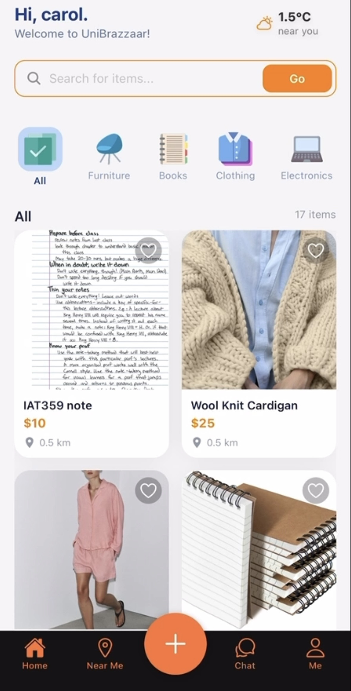
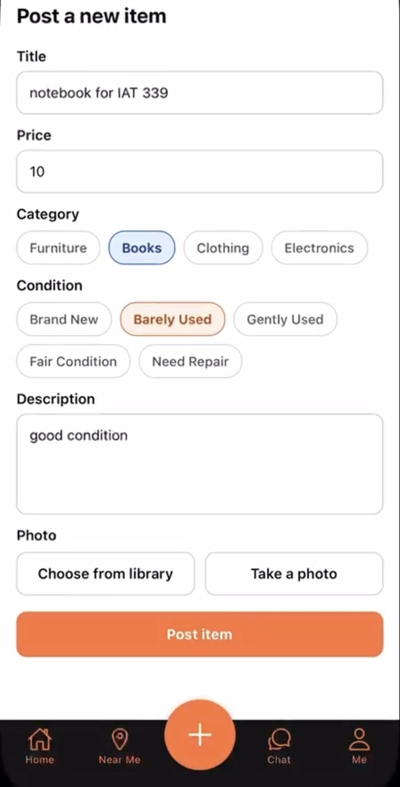
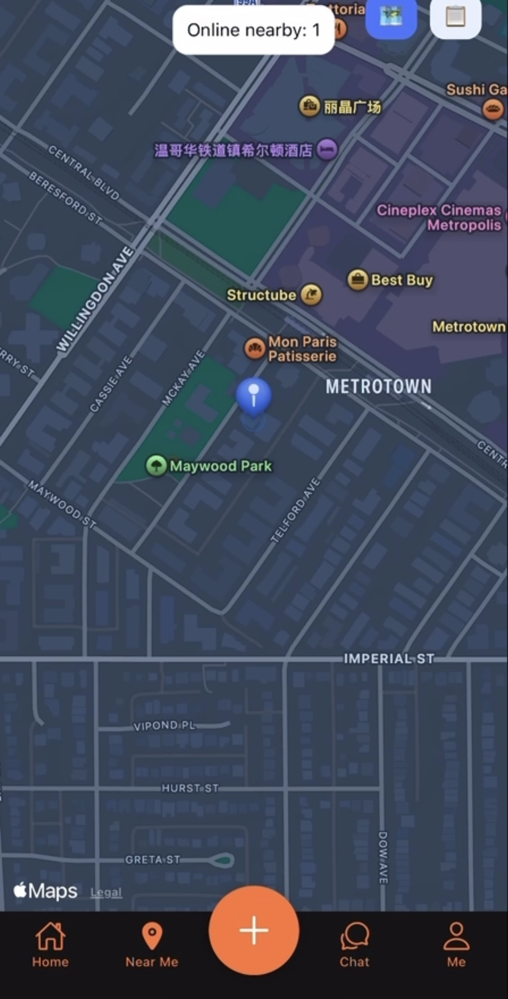
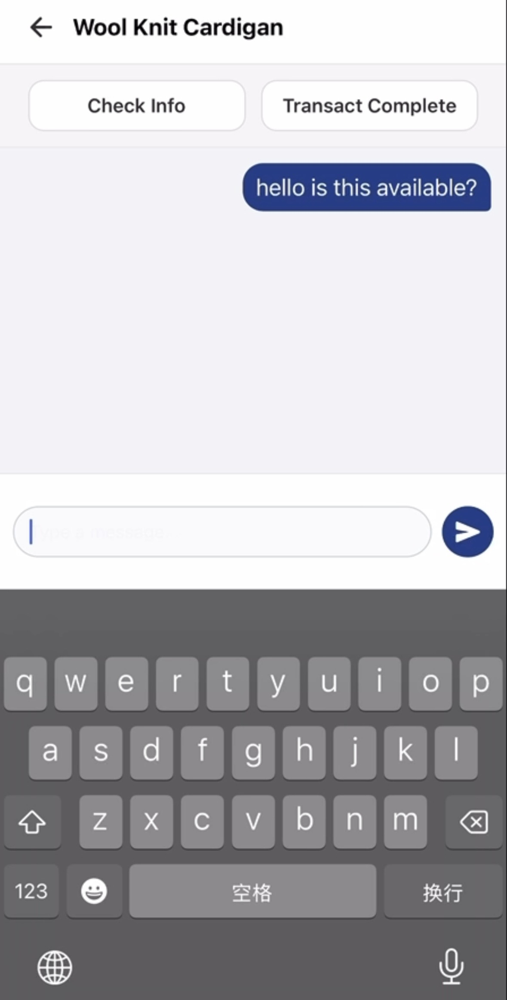
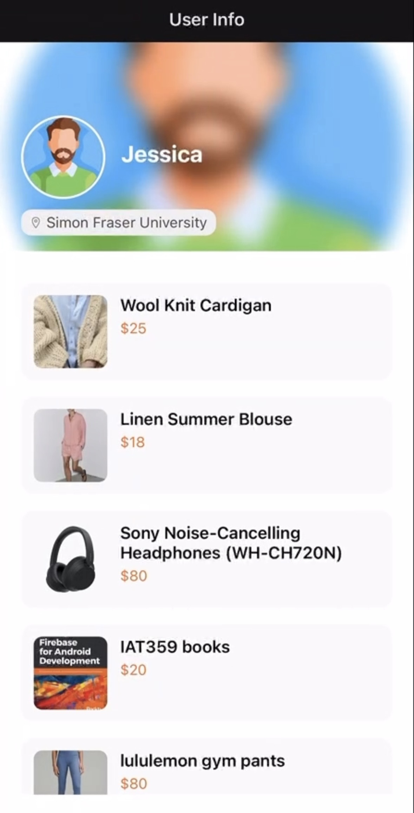

UniBazaar is a location-based mobile marketplace designed for university
students to buy and sell second-hand items within their campus community.
The app combines browsing, item posting, favourites, real-time chat,
nearby maps, and user profiles into one simple and approachable
experience.
UniBazaar was developed as a two-person team project with Carolyn Fan.
I focused on the UI/UX and visual design of the app, including the
colour system, typography, page layouts, visual hierarchy, component
consistency, and the overall look and feel across the interface.
We worked together to plan the app structure and user flows. Together,
we decided how students would move from signing in, browsing listings,
viewing an item, and contacting a seller. We also collaborated
throughout the project to refine interactions and connect the
different features into one consistent experience.
Design Goals
The main design challenge was organizing many different features without
making the app feel complicated. I wanted the interface to feel friendly
and approachable for students while still communicating trust and clarity
for peer-to-peer transactions.
The interface uses a clean white background, dark navy text, and a warm
orange accent for important actions. Rounded cards, simple icons, and
consistent spacing create a softer visual style. Primary actions such as
posting an item, searching, and sending a message are emphasized so users
can quickly understand what to do next.
Core User Flow
A student begins by creating an account or signing in. They can then
browse and search campus listings, open an item to view its details, and
either add it to their favourites or start a real-time conversation
with the seller.
Students can also create their own listing, view nearby users and items
on a map, and manage their profile, favourites, listed items, purchased
items, and transaction history.
Core App Screens




Browse & Search:
The home screen combines a welcoming header, search bar, item categories,
contextual weather information, and listing cards. The visual hierarchy
helps students scan the page quickly without making the interface feel
crowded.
Post an Item:
The posting flow groups the item title, price, category, condition,
description, and photo options into one clear form. The orange action
button creates a strong visual endpoint and makes the task easy to
follow.
Near Me:
The map gives the marketplace a campus-specific purpose by helping users
understand where nearby sellers and items are located. Location and
weather information can also help students plan an in-person exchange.
Chat:
Real-time messaging allows buyers and sellers to discuss an item and
arrange a meeting without leaving the app. Familiar message styling makes
the interaction immediately understandable.
Profile & Personalisation

The profile area brings together the user’s buying and selling activity,
favourites, purchased items, listed items, and account controls.
Selectable avatars add a small sense of identity while keeping the visual
system consistent across the app.
Key Features
- University email login and registration
- Browse and search second-hand listings
- Item posting with structured product details
- Favourites and user profile management
- Real-time buyer and seller chat
- Nearby map and location-based interactions
- Weather information for planning exchanges
- Selectable avatars and transaction sections
Design Takeaways
- A consistent component system is especially important in an app with
many connected screens.
- Strong visual hierarchy can make a feature-heavy product feel simple
and approachable.
- Mapping the user flow together early helped our two-person team align
design and development decisions.
- Technical limitations can influence design choices and require the
team to adjust the final scope.
Outcome
The final prototype delivered a polished and cohesive mobile
marketplace with smooth navigation across authentication, browsing,
posting, favourites, profiles, real-time chat, and map-based features.
This project strengthened my ability to create a consistent visual
system across a larger digital product and to collaborate on user flows
that connect design decisions with functional interactions.